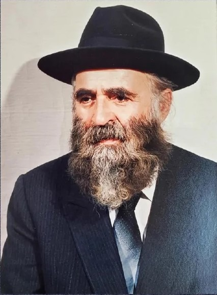

Overzicht: Rabbijn Chaim Kreiswirth was een vooraanstaande orthodox-rabbijnse autoriteit en gemeenschapsleider die bijna vijf decennia lang diende als opperrabbijn van de Machzikei Hadass-gemeenschap in Antwerpen, België. Hij werd alom beschouwd als een van de meest begaafde Thora-geleerden van zijn generatie, bekend om zijn buitengewone breedte van kennis, charismatische stijl van lesgeven en zijn vermogen om studenten en gemeenschappen over de hele Joodse wereld te inspireren.
Vroege jaren en opleiding
Rabbijn Kreiswirth werd geboren in Galicië en studeerde aan verschillende grote yeshivot in het vooroorlogse Oost-Europa. Hij bezocht de gerenommeerde Yeshivas Chachmei Lublin, opgericht door rabbijn Meir Shapiro. Deze instelling stond bekend om haar strenge toelatingseisen, waarbij studenten al op jonge leeftijd een uitgebreide beheersing van de Talmoed en klassieke Joodse teksten moesten aantonen.
Later studeerde hij aan de Slabodka Yeshiva, een van de centrale instellingen van de Litouwse mussar-traditie. Daar maakte hij zich de Litouwse stijl van Thora-studie eigen en bouwde hij relaties op met vooraanstaande rabbijnse figuren. In deze periode trouwde hij met de dochter van rabbijn Avraham Grodzinski, een prominente Slabodka-figuur die verbonden was met belangrijke rabbijnse families, waaronder rabbijn Yisrael Salanter en rabbijn Chaim Ozer Grodzinski. Door dit huwelijk raakte hij ook nauw verbonden met rabbijn Yaakov Kamenetsky, die een blijvende invloed op zijn leven had.
Wereldoorlog II en toevlucht
Tijdens de Tweede Wereldoorlog ontsnapten rabbijn Kreiswirth en zijn vrouw uit het door de nazi's bezette Europa. Uiteindelijk bereikten ze het Mandaatgebied Palestina, waar ze zich aansloten bij een groep Europese vluchtelingengeleerden die steun en onderdak vonden bij leidende rabbijnse autoriteiten, waaronder rabbijn Yitzchak Halevi Herzog, de Asjkenazische opperrabbijn van Israël.
In de naoorlogse jaren werd hij erkend als een uitzonderlijke Thora-geleerde met een opmerkelijk geheugen en intellectueel bereik. Hij werd beschouwd als een gaon, in staat tot langdurige, intensieve Thora-studie over grote delen van de Talmoed en de rabbijnse literatuur.
Rabbijns leiderschap in Chicago
Eind jaren 40 werd rabbijn Kreiswirth door rabbijn Herzog aanbevolen voor een docentschap in Chicago. Ondanks zijn relatief jonge leeftijd werd hij benoemd tot rosh yeshiva.
Zijn manier van lesgeven was zeer karakteristiek. In plaats van zich strikt te richten op analytische, stapsgewijze argumentatie, benadrukten zijn lezingen de breedte van de stof, waarbij hij weidse kennis uit de Thora-literatuur integreerde. Zijn sjiurim waren intellectueel veeleisend en overstegen vaak de voorbereiding van veel studenten, maar ze waren diep inspirerend en motiverend. Hoewel zijn leringen niet altijd in alle technische details te volgen waren, hadden ze een sterke invloed op de studenten, vooral bij het versterken van de toewijding aan het Thora-leven en de Joodse identiteit tijdens de wederopbouwperiode na de Holocaust.
Relaties en educatieve invloed
Rabbijn Kreiswirth onderhield nauwe banden met leidende rabbijnse figuren, waaronder rabbijn Yaakov Yisrael Kanievsky (de Steipler Gaon) en rabbijn Avraham Yeshayahu Karelitz (de Chazon Ish). Hij maakte deel uit van een breed netwerk van in Europa opgeleide rabbijnen die na de oorlog een grote rol speelden bij de wederopbouw van het Joodse leven.
He was ook nauw betrokken bij de ondersteuning van studenten buiten het klaslokaal en moedigde hen vaak aan en hielp hen bij het verkrijgen van rabbijnse en gemeentelijke functies. Verschillende van zijn studenten bekleedden later belangrijke leidinggevende functies in Joodse gemeenschappen wereldwijd.
Opperrabbijn van Antwerpen
In 1955 werd rabbijn Kreiswirth benoemd tot opperrabbijn van de Machzikei Hadass-gemeenschap in Antwerpen, België, een functie die hij bijna vijf decennia bekleedde.
Oorspronkelijk had de Antwerpse gemeenschap geprobeerd zijn oom, rabbijn Yaakov Kamenetsky, aan te stellen, die op dat moment diende als Rosh Yeshiva van Torah Vodaath in New York. Rabbijn Kamenetsky sloeg de uitnodiging echter af en was niet geïnteresseerd in het verlaten van zijn positie. In plaats daarvan beval hij zijn neef, rabbijn Chaim Kreiswirth, aan voor de rol.
De orthodox-joodse gemeenschap van Antwerpen, die grotendeels bestond uit diamantairs en zakenlieden, vereiste een sterk rabbijns leiderschap dat in staat was om complexe halachische vragen en gemeenschappelijke geschillen op te lossen. Rabbijn Kreiswirth werd alom gerespecteerd als posek en gemeenschapsautoriteit. Hij was ook actief betrokken bij liefdadigheidswerk en het regelen van huwelijken (sjidoechiem), in het bijzonder voor behoeftigen. Zijn invloed strekte zich uit tot zowel religieuze als sociale aspecten van het gemeenschapsleven.
Latere jaren en medische episode
In zijn latere jaren werd rabbijn Kreiswirth geconfronteerd met een ernstige medische diagnose. Hij nam contact op met de Steipler Gaon, rabbijn Yaakov Yisrael Kanievsky uit Bnei Brak, en vroeg hem om namens hem te bidden. De Steipler reageerde door te verwijzen naar een bekende beraisa:
“אֵלּוּ דְבָרִים שֶׁאָדָם אוֹכֵל פֵּרוֹתֵיהֶם בָּעוֹלָם הַזֶּה, וְהַקֶּרֶן קַיֶּמֶת לוֹ לָעוֹלָם הַבָּא”
(Eiloe devarim sje'adam ochel peiroteihen ba'olam hazeh, ve'hakeren kayemet lo la'olam haba)
Deze passage somt mitswot op waarvan de belangrijkste beloning is gereserveerd voor de Komende Wereld, terwijl ze ook in deze wereld vrucht dragen. Daaronder vallen bikoer cholim (het bezoeken van zieken), levajas hameis (het begeleiden van de overledene) en hachnasas kallah (het helpen van bruiden/regelen van huwelijken). De Steipler zou hebben uitgelegd dat het versterken van hachnasas kallah kan dienen als een verdienste die bikoer cholim ondersteunt, waardoor de noodzaak voor levajas hameis kan worden voorkomen.
Na deze uitwisseling raakte rabbijn Kreiswirth steeds meer betrokken bij sjidoechiem en besteedde hij aanzienlijke inspanningen aan het helpen regelen van huwelijken, vooral voor behoeftigen.
Persoonlijkheid en stijl
Rabbijn Kreiswirth stond bekend om zijn charisma, humor en intellectuele breedte. Zijn openbare toespraken combineerden diepe Thora-geleerdheid met inspiratie en aanmoediging. Hij benadrukte vaak verantwoordelijkheid, actie en vertrouwen in de toekomst van het Joodse volk. Hij behield een brede blik binnen de orthodoxe wereld en ondersteunde studenten en initiatieven in verschillende delen van de gemeenschap wanneer hij geloofde dat deze bijdroegen aan de Joodse continuïteit.
Erfenis
Rabbijn Kreiswirth overleed in 2001, na decennia van leiderschap in Antwerpen en daarbuiten. Hij wordt herinnerd als een torenhoge Thora-geleerde en gemeenschapsleider die een belangrijke rol speelde in de wederopbouw van het orthodox-joodse leven in het naoorlogse tijdperk. Zijn erfenis omvat zijn geleerdheid, zijn studenten en zijn impact op gemeenschappen in Europa, Israël en de Verenigd Staten. Hij wordt beschouwd als een figuur die intellectuele genialiteit combineerde met warmte, leiderschap en een diepe toewijding aan het Joodse volk.
Profielarchief
